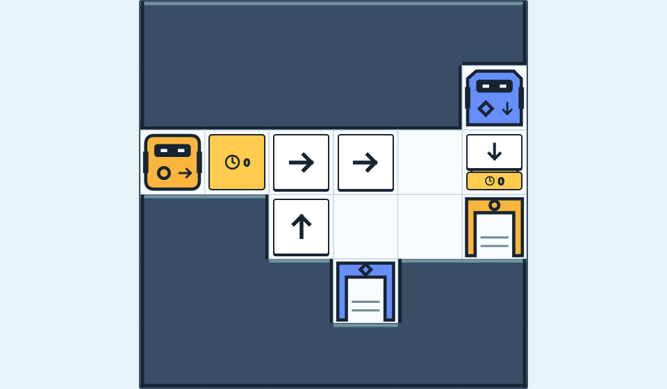
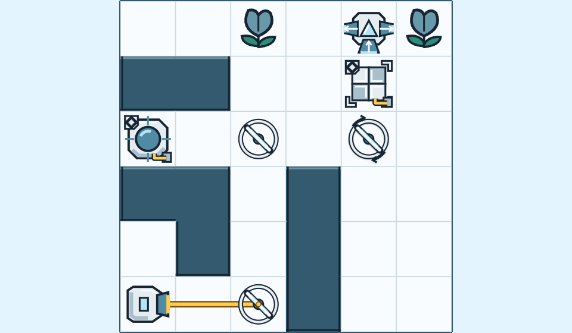
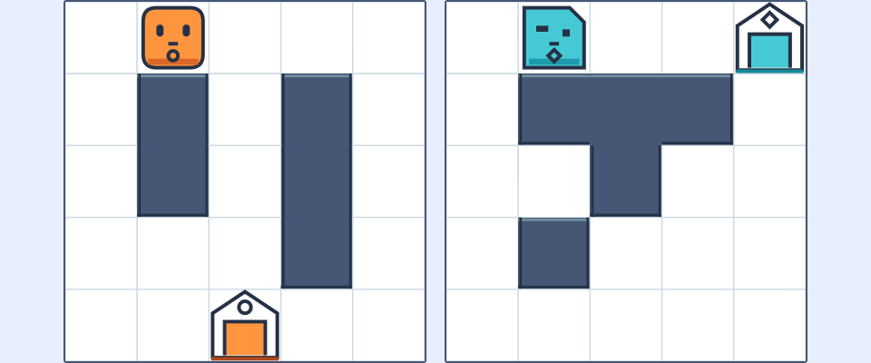
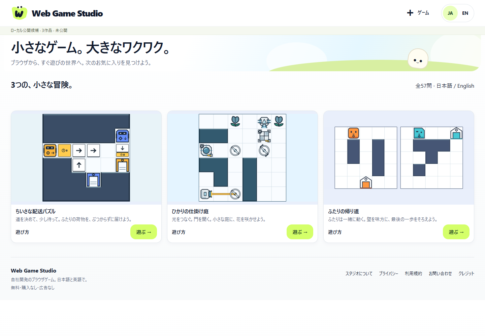
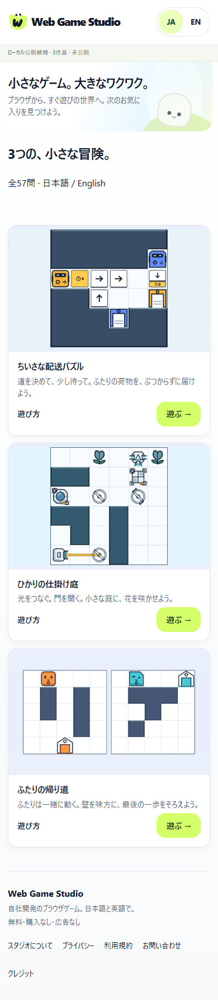

2026-09-16 · LOCAL ONLY · 実公開0本
3つの作品を、ふつうのPlayから。
採用版を接続したローカル公開候補です。技術QA完了。公開準備はBLOCKED。
http://127.0.0.1:4350/ja/http://127.0.0.1:4351/
18件の公開blocker。正式名称/運営情報/対象市場・年齢/本番データ構成/権利/法務/新RC実機/全編Human/公開承認が未確定です。Tiny Deliveryには既存同名の配送ロボットゲームがあり、名称判断が必要です。
試遊と短い操作証拠

ちいさな配送パズル
Tiny R2 · BGM B + Motion/SFX
遊ぶ →無音の実ブラウザ操作記録。聴感/実機の受入ではありません。

ひかりの仕掛け庭
Lightwork R1 · LG-C + Object + Polish
遊ぶ →無音の実ブラウザ操作記録。聴感/実機の受入ではありません。

ふたりの帰り道
Two Ways R1 · TW-C / BGMなし
遊ぶ →無音の実ブラウザ操作記録。聴感/実機の受入ではありません。
技術結果
| 対象 | 結果 |
|---|---|
| 型 / 通常・RC build / 旧routes | PASS · 213/213 unit · 3/3 routes |
| 全57問のRC実UI解答再生 | 57/57 PASS · 面白さの判定ではありません |
| 日英・3作品・保存・失敗・3表示・入力 | 6/6 groups PASS · 1440/390/320px |
| 音・停止復帰・設定保持 | 3/3 groups PASS |
| 代表Art/Motion/SFX同等性 | 3/3 PASS · 凍結版とDOM/keyframes/PCM一致 |
| 旧版の完全再現 | 46 / 48 / 44 files PASS · manifest不変 |
| 配布物 | 48 allowlisted files · RC Gitleaks PASS · 内部URL404 |
| 全project raw scan | FAIL 2件を保持 · 既知SHA/TLSの限定承認 · 新規候補0 |
| 実機・聴感・全編Human・法務 | PENDING / NOT TESTED · 外部初見 DEFERRED |
Tinyの原音BGMは12.29 MBを初回操作後に非同期取得します。loopbackの起動実測139–165msは本番/スマホ回線の保証ではありません。
technical-results · full-run-results · browser-results · lifecycle-results · representative-equivalence · distribution-manifest · distribution-audit · cost-media · release-readiness · security · changes
PC / スマホ幅


Human判断は3群
- ブランド：正式サイト名/domain・ゲーム名。Tiny同名懸念と国別商標確認。
- 運営：公開する運営者/連絡先・問い合わせ運用/保持期間。公開範囲決定前に機微情報をRepoへ入れない。
- 対象とデータ：市場/年齢・hosting/log/計測・保持/同意、法務/権利/動画利用の最終確認。
停止・再起動
npm run build:rc npm run preview:rc npm run review:rc powershell -NoProfile -File scripts/rc-stop.ps1 -Target both
stage / commit / push / deploy / LAN / 購入 / 契約 / 外部API・計測接続送信は0。主担当・独立read-only reviewとも実モデル gpt-6-astra。